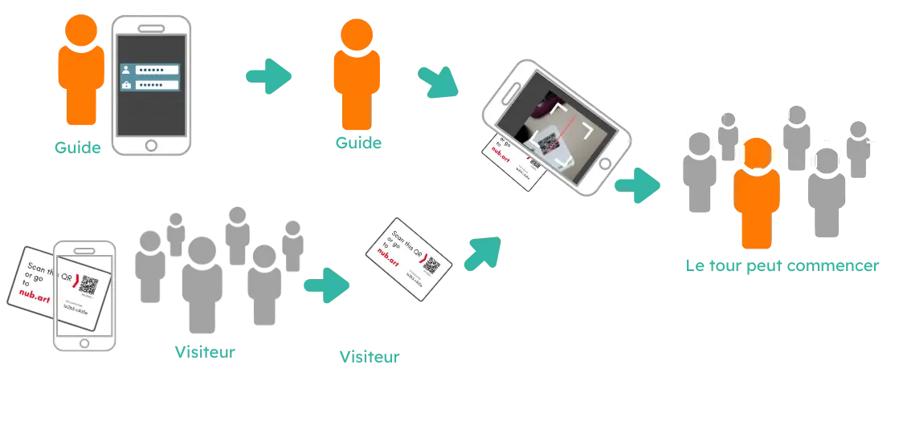

Le système audio pour visites guidées qui ne nécessite aucun matériel
Dirigez-vous un groupe dans un environnement bruyant ou dans un lieu où vous devez parler à voix basse ?
Le prix d'un système conventionnel de guide touristique sans fil vous intimide-t-il ?
Sans terminal, sans téléchargement et sans compte utilisateur, Nubart® Live constitue une solution abordable et adaptée à tout type de visite.
Une carte avec un code QR permet la connexion entre les visiteurs et le guide touristique. Votre smartphone sert d'émetteur et les smartphones des visiteurs de récepteurs. C'est aussi simple que cela.
Une meilleure façon de guider des groupes, sans équipement encombrant
Systèmes radio-guides traditionnels
- Les casques doivent être nettoyés après chaque utilisation
- Matériel coûteux à acheter, louer ou entretenir
- Les visiteurs internationaux se sentent exclus
- Peu flexible pour les visites occasionnelles
- Batteries, recharges et logistique nécessaires
Nubart LIVE
- Aucune appli à installer, aucun appareil à désinfecter
- Les visiteurs scannent simplement un code — pas des complications
- Traduction IA optionnelle dans plus de 35 langues
- Fonction de questions discrètes pour des visites plus fluides
- Achat unique des cartes, aucune flotte d’appareils
À partir de 154 € (achat unique, sans abonnement) · Voir tous les tarifs →
Fonctionnement de Nubart LIVE - Principe de base

Prêt à découvrir comment Nubart LIVE fonctionne pour vos visites ?
Demandez un kit d'essai gratuit
Pourquoi chaque participant dispose de son propre code
Contrairement aux systèmes utilisant un QR partagé ou un code PIN, Nubart LIVE attribue à chaque participant un code d'accès unique et non transférable.
Tout le monde prêt instantanément : Pas d'attroupement autour d'un seul appareil. Chaque participant scanne son code et tous sont connectés en même temps.
Autonomie et sérénité : La connexion a été interrompue ? Il suffit de scanner à nouveau, sans interrompre la visite ni solliciter le guide.
Contrôle total pour le guide : Seuls les participants invités peuvent accéder. Aucun auditeur indésirable ni interférence entre groupes.
Rien de plus simple
Pourquoi des dispositifs quand tout le monde a un smartphone ?
Facile à utiliser
Les visiteurs et le guide scannent le code QR sur les cartes - c'est tout ! Il n'est pas nécessaire de s'enregistrer ou de télécharger une application (seul le guide doit se connecter).
Abordable
Notre formule de base avec 500 cartes coûte moins cher que la location d'une équipe de dispositifs de guidage. Avec 500 cartes, vous aurez suffisamment de cartes pour de nombreuses visites.
Anonyme
Vos visiteurs ne doivent pas fournir de données personnelles pour utiliser Nubart Live - c'est complètement anonyme !
Traduction par IA
Vous dirigez un groupe multilingue ? Aucun problème ! Ajoutez simplement notre fonctionnalité de traduction en direct et tout le monde pourra suivre, quelle que soit sa langue maternelle.
Savoir de plus
Option de poser des questions
Vos visiteurs peuvent poser des questions au guide à tout moment sans l'interrompre : il peut accéder à la liste des questions et y répondre quand il le souhaite.
Voir comment cela fonctionne
Facile à transporter
Un étui de dispositifs de guidage traditionnel est lourd à transporter et tentant pour les voleurs - mais pas nos cartes !
Hygiénique
Les dispositifs de guides touristiques doivent être désinfectés après chaque utilisation - pas nos cartes !
Écologique
Les appareils génèrent des déchets électroniques. Nos cartes sont imprimées sur carton FSC avec compensation de CO2.
Consultez les cas d'utilisation de Nubart Live
Cas d'utilisation

Visites d'usines et de sites de production
Montrez votre usine à vos visiteurs sans trop dépenser :
En combinaison avec un microphone unidirectionnel pour smartphone, Nubart Live est idéal pour les visites guidées dans des environnements bruyants tels qu'une usine.

Itinéraires à travers la ville
Nubart Live est un système simple et abordable pour les itinéraires urbains:
La voix du guide peut être entendue malgré la circulation, et peu importe si les participants s'éloignent du guide.

Accessibilité pour les malentendants
Avec Nubart Live, vous pouvez proposer des visites guidées plus inclusives:
Les personnes souffrant de problèmes auditifs entendent beaucoup mieux en utilisant un smartphone avec des écouteurs, car il les isole des bruits de fond et permet de régler le volume, entre autres avantages.
Idéal pour les visites d'usines et d'installations industrielles
Relevez les défis liés aux visites d'usines
Le bruit des environnements de production rend la communication difficile. Les systèmes de radioguide traditionnels sont coûteux à l'achat ou à la location, nécessitent une maintenance constante et ne permettent pas de gérer facilement des groupes multilingues.
Pourquoi les usines choisissent Nubart LIVE :
- Suppression du bruit : l'utilisation d'un microphone USB unidirectionnel pour le guide permet d'obtenir un son clair, même dans les usines bruyantes.
- Formation et intégration des employés : formation des employés internationaux dans leur langue maternelle
- Confidentialité des visiteurs VIP : participation anonyme, idéale pour les visites confidentielles
- Aucune restriction de fréquence : fonctionne dans le monde entier via Internet, contrairement aux systèmes radio sous licence
- Utilisation occasionnelle : idéal pour les visites spontanées d'investisseurs, mais pas pour les visites quotidiennes
Cas d'utilisation courants dans les usines :
- Visites d'investisseurs et de parties prenantes
- Orientation des nouveaux employés et formation à la sécurité
- Visites de clients à l'usine
- Démonstrations lors de salons professionnels

Organisez-vous des visites de l'usine ?
Demandez un kit d'essai gratuit pour le tester dans l'environnement de votre usine.
Demandez un kit d'essai gratuitAjoutez l'interprétation simultanée grâce à l'IA
Traduction simultanée optionnelle basée sur l'IA

Vous guidez des groupes avec des visiteurs internationaux ? Avec notre module complémentaire IA optionnel, un seul guide peut désormais accompagner un groupe multilingue sans faire appel à des interprètes.
Notre module complémentaire de traduction IA optionnel fonctionne parfaitement avec Nubart LIVE :
- Les participants scannent leur code QR et sélectionnent leur langue préférée parmi 35+ options
- Ils peuvent écouter dans la langue d'origine pour entendre la voix naturelle du guide
- Ou recevoir la traduction IA en temps réel sous forme de texte et d'audio sur leur écran
- Les questions sont traduites automatiquement si les participants écrivent dans leur propre langue
Un seul tour. Plusieurs langues. Aucun guide supplémentaire nécessaire.
Besoin d'une traduction par IA pour un événement plutôt que pour une visite guidée ?
Découvrez Nubart TRANSLATE, notre solution pour les conférences, les congrès et les événements d'entreprise.
Démonstration de Nubart LIVE avec module complémentaire de traduction simultanée.
Lancez la vidéo avec le son
Tarifs & Calculateur de coûts
Des tarifs simples et transparents. Calculez votre devis en quelques secondes.
Cartes avec code QR
Achat unique · guides illimités · sans abonnement

PDF · découper et utiliser
Livré en 1 jour max.
+ €1,50/code · min. 50

500 cartes en carton préimprimées
Expédié en 2-3 jours

3 000+ cartes · votre image de marque
Expédié en 30 jours
remises sur volume
Module de traduction IA
- Plus de 35 langues, audio et texte en temps réel
- Prix par stream du guide, pas par langue
- Auditeurs illimités — aucun frais par visiteur
- Facturation uniquement quand le guide parle avec la traduction activée
- Le guide active/désactive à tout moment
Bibliothèque multimédia
Le guide envoie des contenus multimédia sur les écrans des participants via télécommande. Une bibliothèque par itinéraire.
Votre estimation de coûts
Calculez votre devis Nubart LIVE en quelques clics
Étape 1 sur 4
Quel forfait de cartes vous convient ?
Étape 2 sur 4
Avez-vous besoin d'une bibliothèque multimédia ?
Une bibliothèque multimédia permet au guide d'envoyer des images, vidéos ou documents sur les écrans des participants pendant la visite via télécommande. Vous pouvez créer une bibliothèque différente pour chaque itinéraire.
Étape 3 sur 4
Aurez-vous besoin du module de traduction IA ?
Traduction en temps réel dans plus de 35 langues. €39 par heure de stream (par guide avec traduction active).
Est-ce la première fois que vous utilisez la traduction IA de Nubart LIVE ?
Votre estimation
Récapitulatif des coûts
Votre demande de devis est prête
Copiez le texte ci-dessous et collez-le dans votre client de messagerie, ou utilisez le bouton Ouvrir dans l'application mail si vous en avez une de configurée.
Poser une question au guide ? Pas de problème
La plupart des systèmes de guidage de groupe standard (guides radio) ne permettent pas aux visiteurs de poser des questions.
Certains sont bidirectionnels et permettent au participant de poser une question que tout le groupe entendra. Les participants timides utiliseront rarement cette fonction, tandis que les plus audacieux risquent d'interrompre la visite par des questions interminables, ce qui nuit à l'expérience globale.
Nubart Live offre une solution non invasive dans laquelle les questions sont accumulées sur le smartphone du guide afin qu'il puisse y répondre au moment opportun.
Si vous avez acheté le module de traduction simultanée, les questions seront traduites automatiquement.
Participant

Guide

Ils nous font confiance


Questions fréquentes
Questions fréquentes
Premiers pas
Pendant la visite
La latence dépend des performances du smartphone, de la qualité de la connexion et du fait que les participants utilisent ou non le même fournisseur de données mobiles.
Cependant, si le guide parle à voix basse, la latence est à peine perceptible : les participants entendront principalement la voix amplifiée de leur smartphone plutôt que l'écho de la voix naturelle du guide.
Le groupe restera connecté, mais en attente pendant que vous parlez. Une fois votre appel terminé , revenez au navigateur. Si certains participants affichent une lumière rouge au lieu d'une lumière verte, appuyez sur « recharger » : tous se reconnecteront sans avoir à scanner à nouveau leurs codes QR.
Remarque : sur Android, si vous oubliez de couper le son avant de répondre, les participants peuvent entendre votre partie de la conversation. Sur iPhone, ils n'entendront rien.
Complément de traduction avec IA
Veuillez consulter nos instructions pour plus d'informations.
Dans la pratique, ces solutions improvisées échouent de manière prévisible. La traduction fonctionne à tour de rôle : le guide parle, attend, puis l'application restitue la traduction — chaque explication prend deux fois plus de temps. Une seule langue cible peut être diffusée à la fois : les groupes internationaux mixtes sont donc impossibles. Si le son passe par un haut-parleur, il entre en concurrence avec le bruit ambiant et reste audible pour les personnes alentour — un vrai problème dans les zones de production confidentielles. Et si chaque visiteur manipule sa propre application, chacun entend une traduction différente à un moment différent, sans aucune synchronisation au sein du groupe.
Nubart LIVE est conçu précisément pour ce scénario. Le guide parle une seule fois dans son smartphone ; tous les participants reçoivent le même flux audio en direct, synchronisé, sur leur propre téléphone et avec leurs propres écouteurs — sans téléchargement d'application, sans haut-parleur partagé. Avec la traduction simultanée par IA en option, chaque participant choisit sa langue et entend une traduction en continu pendant que le guide poursuit ses explications, sans pause. Les participants peuvent même envoyer des questions écrites au guide, traduites automatiquement dans sa langue.
Les applications de traduction grand public sont parfaites pour demander son chemin en vacances. Guider trente personnes en cinq langues dans un hall d'usine bruyant est un tout autre métier — et cela exige un système conçu pour cela.
Détails techniques
Cependant, cela n'affecte pas les membres du groupe : pour eux, la charge de la batterie n'est pas beaucoup plus importante que lorsqu'ils écoutent un podcast ou un livre audio. Par exemple, une heure d'utilisation continue consomme 8 % de la batterie d'un téléphone Android de 4 ans.
Nubart LIVE fonctionne avec n'importe quel appareil hotspot standard et n'importe quelle carte SIM — vous êtes libre de choisir le matériel et le forfait data qui conviennent le mieux à votre budget et à votre destination. Cette approche est particulièrement utile lorsque votre groupe comprend des visiteurs internationaux qui peuvent être confrontés à des frais d'itinérance, lorsque les visites se déroulent dans des zones à couverture mobile insuffisante, ou simplement lorsque vous souhaitez garantir une connexion stable quel que soit le forfait ou l'opérateur de chaque participant.
Si vous organisez des visites de plusieurs jours ou de grands groupes avec la traduction active, nous vous recommandons de dimensionner votre forfait data en conséquence — ou simplement de choisir une option illimitée, qui coûte généralement quelques euros de plus et élimine tout risque de se retrouver à court de données en cours de visite.
Cartes
Veuillez nous envoyer les images, logos et autres éléments que vous souhaitez inclure dans votre carte et notre designer créera plusieurs propositions de design parmi lesquelles vous pourrez choisir.
Consultez nos tarifs pour Nubart LIVE
Si vous préférez que vos cartes aient un design personnalisé, la commande minimale est de 3 000 unités. Consultez nos prix pour Nubart LIVE
Pas de goulot d'étranglement au départ : Au lieu de 25 personnes faisant la queue pour scanner un petit écran de téléphone, chaque participant scanne sa propre carte indépendamment. Le guide peut même pré-scanner les cartes avant de les distribuer, formant le groupe à l'avance.
Récupération de session : Les touristes quittent constamment leur navigateur pour prendre des photos, consulter des messages ou utiliser d'autres applications. Avec un code numérique partagé, ils perdent leur connexion et doivent interrompre le guide. Avec une carte Nubart LIVE, ils re-scannent simplement et rejoignent instantanément — sans l'aide du guide.
Contrôle d'accès : Contrairement aux systèmes où n'importe qui connaissant un code PIN ou voyant un QR code peut rejoindre, Nubart LIVE donne au guide un contrôle total sur les membres du groupe. Pas d'auditeurs non invités, pas de confusion entre des groupes de visite qui se chevauchent au même endroit.
Besoin d'une option sans carte pour des événements spontanés ou ponctuels ? Renseignez-vous sur nos feuilles de QR codes imprimables — les mêmes codes uniques, prêts en quelques minutes.
Tarifs
Prêt à transformer vos visites de groupe ?
Testez Nubart LIVE sans risque. Obtenez un kit d'essai avec 30 minutes de traduction IA gratuite.
Demandez un kit d'essai gratuitPas de carte de crédit requise Assistance complète pendant les tests